Monyet Ekor Panjang (Long Tailed Macaque)
Nama Latin : Macaca fasicularis
Adalah monyet asli Asia tenggara namun sekarang tersebar di berbagai tempat di Asia. Monyet bertubuh kecil sedang, dengan panjang kepala dan tubuh 400-470 mm, ekor mencapai 500-600 mm dan kaki belakang 140 mm. Berat hewan betina 3-4 kg, sedangkan jantan 5-7 kg. Warna rambut di tubuhnya coklat abu-abu, bayi-bayinya berwarna kehitaman.
Tersebar di Asia

Habitat : Hutan pesisir, hutan sepanjang sungai, Kebun campuran
Makanan : Buah-buahan dan berbagai hewan kecil

Reproduksi : Melahirkan/beranak